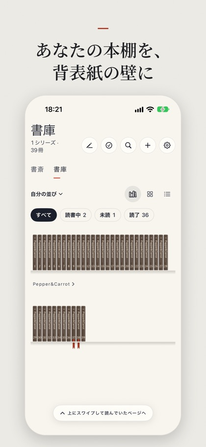
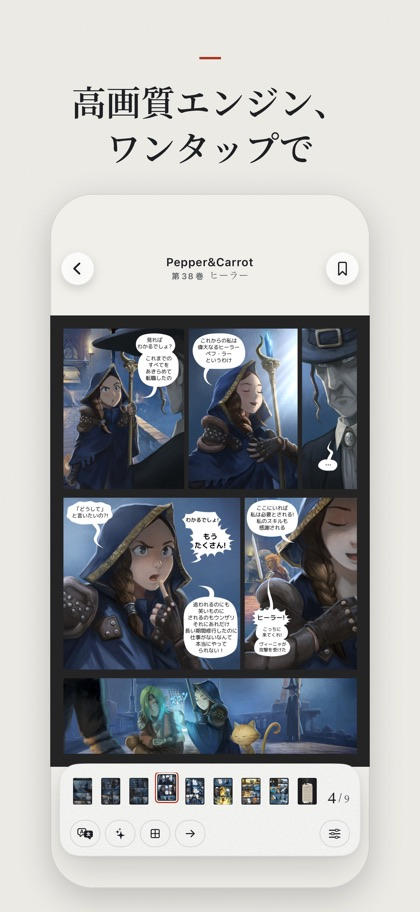
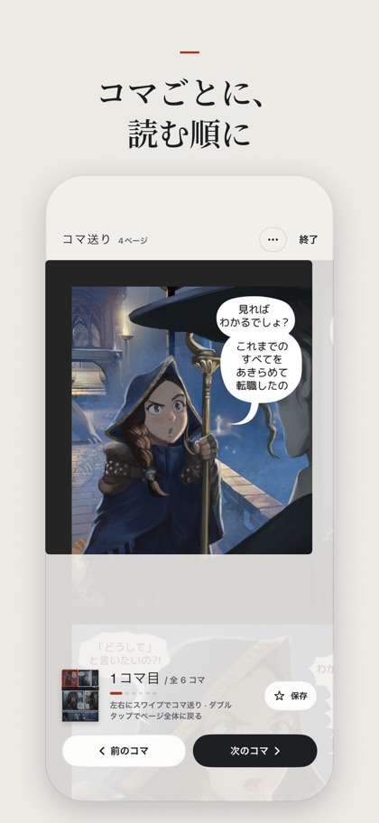
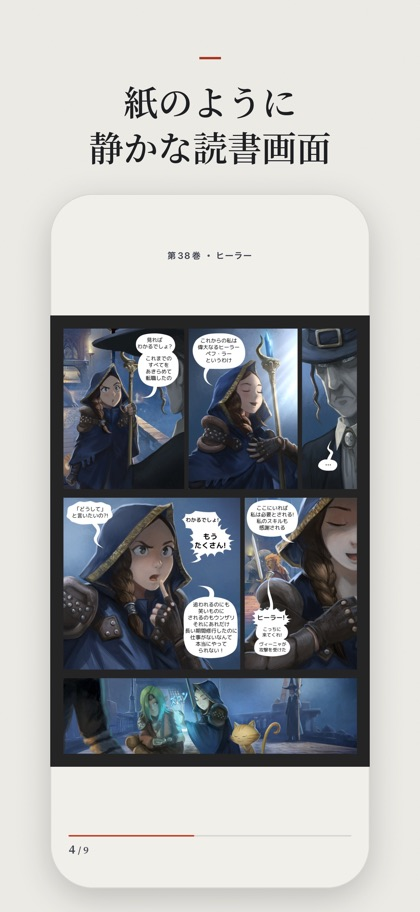
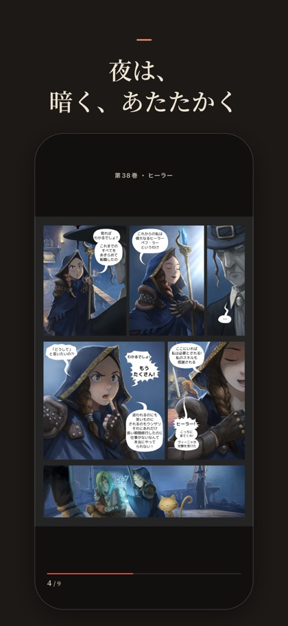
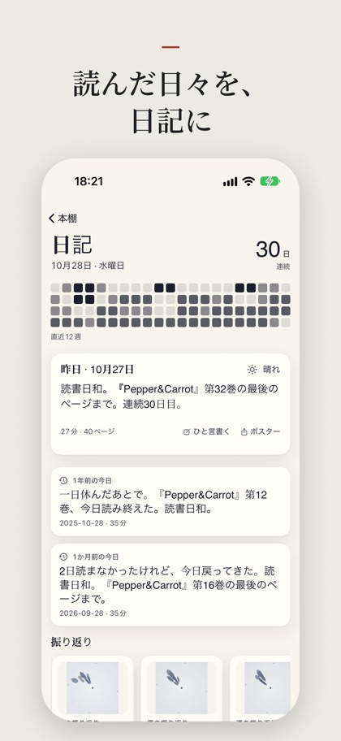

折りたたみ画面のための漫画リーダー
あなた自身のライブラリを読むためのアプリ。CBZ、EPUB、PDF、画像フォルダ、NAS 上の Komga / OPDS に対応。解像度の低い古いスキャンでも、トーンと線がくっきり。
バージョン 1.0 は TestFlight でテスト中です。公開後、ここに App Store へのリンクを掲載します。






高画質エンジン
独自に学習させた漫画用超解像で、低画質の白黒ページのトーンと線を iPhone の中で描き直します。カラーはシステムの超解像。ページは外に送りません。眼鏡を選ぶように「印刷風」と「なめらか」を選べ、夜の充電中に次のページを先に高画質化します。
コマ送り
コマとセリフを自動で見つけ、読む順に一コマずつ表示します。
翻訳
セリフは端末内で翻訳。長押しで原文が見られます。
紙とインク
落ち着いた紙の色、背表紙が並ぶ本棚、ダークモードに合わせた夜の読書。
読書日記
毎日読んだものと時間を記録。いちばんのコマが動き出します。
プライバシー
データは一切収集しません。ライブラリと読書記録は、あなたのデバイスとあなた自身の iCloud の中だけに。
iPhone Duo を横に開けば見開きの単行本、ヒンジがちょうどノドに。縦に持てば一ページが画面いっぱい、閉じても外側の画面専用のレイアウト。現在はシミュレータで調整しており、実機での調整は2026年11月末から始めます。
スクリーンショットと内蔵サンプル：Pepper&Carrot（David Revoy、CC-BY 4.0）。